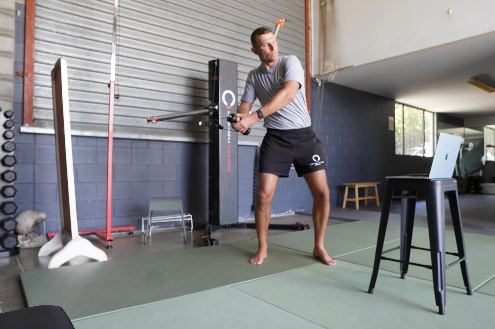
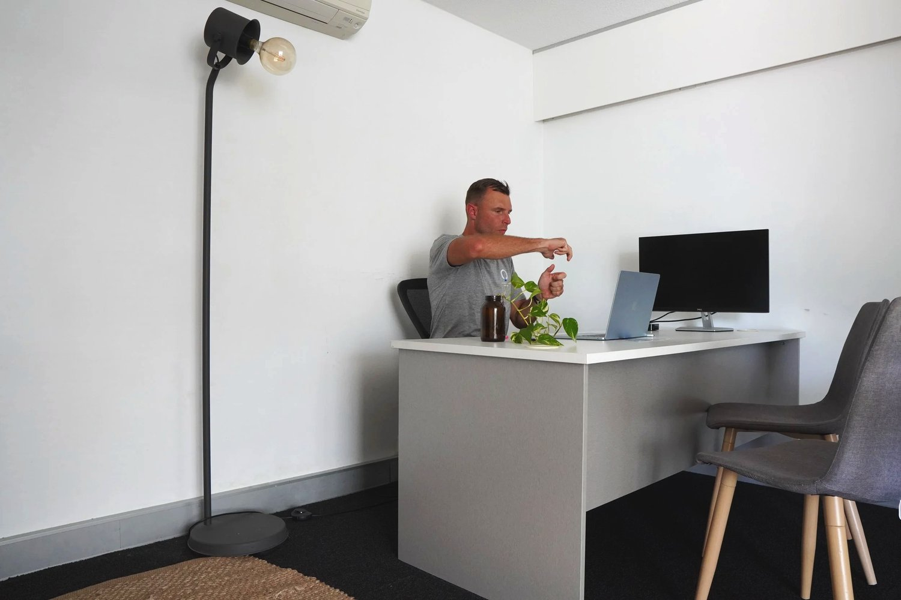

The fitness industry has exploded with live online fitness classes — from virtual yoga sessions to streaming spin classes. Flexibility, accessibility, and the rise of home workouts have made it easier than ever to join a class from anywhere in the world.
But here’s the truth: while these trends make fitness more accessible, most of them miss the deeper problem — they don’t actually correct the way your body moves. At FP Brisbane, we run live online fitness classes designed around Functional Patterns methodology. Instead of chasing calories or fads, we teach you how to move efficiently, reduce pain, and build strength that lasts.
Let’s break down five of the biggest trends in online fitness — and why our approach takes things further.

What Are Online Fitness Classes Live?
“Online fitness classes live” are workouts streamed in real-time so you can train at home while following an instructor. These range from live online group fitness classes to specialised sessions like online Pilates or yoga. The main benefit is accountability: you join in at a set time with other participants.
Trend 1: Flexibility and Accessibility
The biggest reason people join live streaming fitness classes is flexibility. You can log in from anywhere, fit workouts around your schedule, and avoid commuting. Platforms like Peloton and MindBody have made on-demand access standard.
🔑 But flexibility isn’t enough if the movements you’re repeating are inefficient. That’s where we differ — every FP Brisbane session is customised to your structure and biomechanics, not just a “follow-along” class.

Trend 2: Community Engagement in Live Streaming
Another major trend is the community feel. Live online group fitness classes create motivation, accountability, and social connection. Whether it’s a virtual yoga flow or a HIIT session, people show up because they feel part of something bigger.
🌀 The downside? Generic classes rarely address individual asymmetries. At FP Brisbane, our trainers keep classes small and integrate gait analysis and postural correction into the online format, so you get connection without sacrificing precision.
Trend 3: Specialisation of Classes
From online Pilates classes live to live yoga sessions online, the trend is toward niche specialisation. People want something more tailored than a one-size-fits-all bootcamp.
🌍 The problem? Specialisation often means isolation — Pilates works on the core, yoga on flexibility, HIIT on intensity. What’s missing is integration. FP training bridges the gap by teaching your body to function as a system — so strength, mobility, and balance develop together.

Trend 4: Global Reach of Online Fitness
Live fitness classes online in the UK, India, and the U.S. mean you can join an instructor halfway around the world. This has connected cultures and made fitness more universal.
🌏 But what works in one culture may not solve the pain points in another. Most global programs push trends — not principles. FP Brisbane’s live online training brings a principle-based system rooted in biomechanics, not fads, so it works anywhere because it’s based on human movement, not fashion.
Trend 5: Free Online Fitness Classes Live
From YouTube workouts to “free trials,” there’s no shortage of free live online fitness classes. These are great if you just want to move.
⚠️ The catch? Free rarely means effective. Without accountability, assessment, or feedback, these workouts often reinforce the same dysfunctional patterns causing your pain in the first place. Our 5-session FP online training packs are structured so you not only train — you progress.
The Future of Live Online Fitness Classes
The future isn’t just more options. It’s smarter options. People are realising that burning calories without correcting mechanics is a short-term fix. The real shift is toward approaches that blend accessibility with long-term health — and that’s where Functional Patterns sets itself apart.
Tips for Choosing the Right Live Online Fitness Classes
-
Look for integration, not isolation — whole-body training beats single-muscle workouts.
-
Check the methodology — is it based on biomechanics, or just exercise trends?
-
Seek feedback loops — make sure trainers assess your movement, not just cheer you on.
-
Prioritise results that carry into life — pain-free movement, posture, energy.

Ready to Train With Us Live?
At FP Brisbane, our live online fitness classes aren’t about trends — they’re about transformation. With our 5-session online training packs, you’ll learn to:
-
Improve posture and gait efficiency
-
Reduce pain and prevent injuries
-
Build functional strength that carries into real life